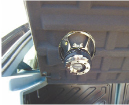
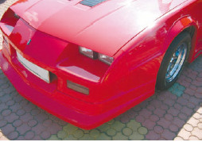
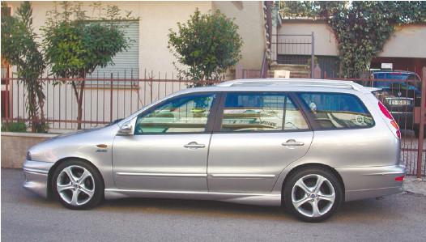
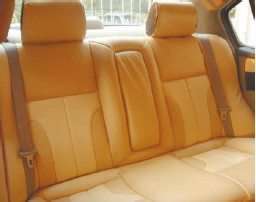

Навязчивый сервис
Как известно, дороже всего нам обходятся излишества. Это в полной мере касается и автомобилей. Многие дополнительные «примочки», которые никак не влияют на эксплуатационные качества автомобиля, стоят немалых денег. И продавцы, особенно в автосалонах, всеми силами стремятся убедить покупателя, что просто невозможно жить без боковых порогов, обтекателей и т. д. Они стремятся установить на покупаемый автомобиль как можно больше дополнительного оборудования (рис. 1.7), ведь их зарплата зависит не столько от количества проданных автомобилей, сколько от вырученных сумм, так что увеличить любыми путями стоимость машины в их прямых интересах.

Рис. 1.7. «Всего» $300 – и вы становитесь счастливым обладателем акустической системы в крышке багажника
Учтите, что эти «прибамбасы» и «навороты» обойдутся вам как минимум вдвое дороже, чем в обыкновенном автомобильном магазине или на авторынке. Кроме того, некоторое подобное оборудование не просто является обычными «понтами», а еще и способно ухудшить эксплуатационные характеристики автомобиля (например, боковые пороги обычно снижают дорожный просвет) (рис. 1.8).

Рис. 1.8. Установка аэродинамического обвеса во многих случаях снижает дорожный просвет
Совет
Не стоит в резкой форме отказываться от того, что предлагают продавцы автосалонов, даже если все это вам совершенно не нужно. Тем более не стоит говорить, что предлагаемые «автопримочки» слишком дорогие и прямо из автосалона вы направитесь в ближайший магазин, где и приобретете все гораздо дешевле. Этим вы только настроите продавцов против себя. Будьте дипломатичнее. Скажите, что ваша жена (муж) категорически против аэродинамического обвеса или терпеть не может сетку в багажнике.
Но основная «засада» с навязчивым сервисом поджидает неопытных покупателей вовсе не около дополнительного оборудования, а рядом с самим автомобилем. Вы приходите в автосалон или на авторынок с целью приобрести машину. Если у вас нет иммунитета к настойчивости продавцов, то вас смогут убедить, что тот автомобиль, который вы осматриваете в данную секунду, и есть машина вашей мечты. И совершенно неважно, что вы всегда мечтали о седане, а вам навязывают универсал (рис. 1.9) – грамотный продавец найдет множество обоснований, почему именно универсал является для вас наилучшим выбором, и то, что вы купили не ту машину, вы сообразите, уже только приехав на ней домой.

Рис. 1.9. Универсалы любят дачники и путешественники
Помните, что продавца меньше всего интересуют ваши желания и потребности. Его задача – продать автомобиль. Ну а ваша – купить, соблюдя при этом свои интересы.
Не так уж редко случается, что, видя неопытность покупателя, продавец добавляет плюсов предлагаемой машине. К примеру, кожаный салон в сочетании с кожзаменителем может быть назван полностью кожаным (рис. 1.10). Могут быть «убраны» лишние секунды при разгоне до 100 км/ч (то есть будет сказано, что автомобиль разгоняется быстрее, чем на самом деле). Также частенько продавцы грешат добавлением автомобилю экономичности: расход 10 литров бензина на 100 км пробега одним движением языка становится девятью, а то и восемью литрами. Вам могут сообщить, что у данного автомобиля оцинкован кузов или объем багажника больше, чем есть на самом деле. Реальное положение дел выясняется лишь тогда, когда покупатель уже проехал на автомобиле некоторое расстояние и предъявить претензии, а уж тем более вернуть автомобиль становится невозможно.

Рис. 1.10. Кожаный салон в сочетании с кожзаменителем неопытный покупатель не отличит от чисто кожаного
Совет
Покупая автомобиль и выбрав нужную марку и модель, не поленитесь изучить ее характеристики на официальном сайте российского представительства данного автопроизводителя (если вы приобретаете иномарку). Изучите и другие источники – бывает, что даже в специализированных автомобильных изданиях содержатся не вполне корректные сведения, особенно когда дело касается технических характеристик и комплектации автомобиля Не слишком доверяйте рекламно-информационным материалам, скептически относитесь к информации, размещенной на сайте дилера, – там могут быть неточности.